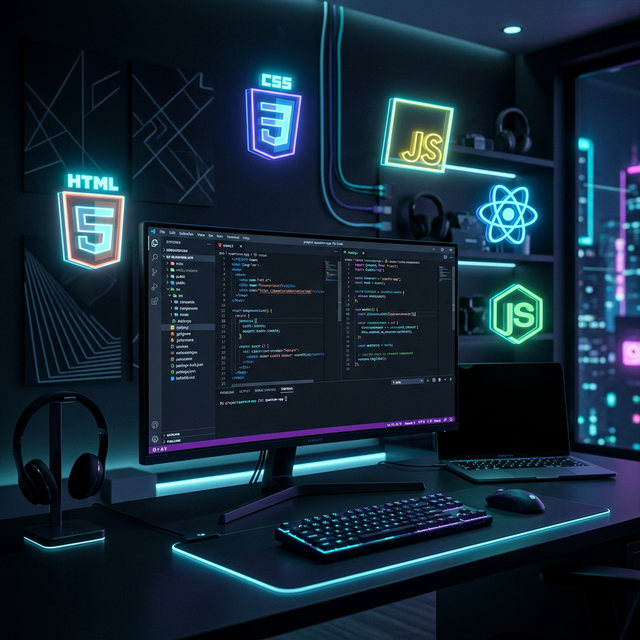

Полезные
ресурсы
Подборка лучших платформ и образовательных сайтов для изучения современных веб-технологий — от основ HTML до продвинутых фреймворков.
Мир веб-разработки
Современная веб-разработка включает десятки технологий и инструментов. На изображении ниже представлена типичная рабочая среда веб-разработчика с основными технологиями:

Рабочее место современного веб-разработчика — HTML5, CSS3, JavaScript, React и Node.js
Где учиться?
Лучшие бесплатные ресурсы для изучения веб-разработки с нуля:
MDN Web Docs
Главный справочник по HTML, CSS и JavaScript от Mozilla — самый полный и актуальный источник
freeCodeCamp
Бесплатная платформа с интерактивными курсами по веб-разработке и программированию
W3Schools
Простые туториалы с примерами по всем веб-технологиям — идеально для начинающих
GitHub
Крупнейшая платформа для совместной разработки и хостинга открытого кода
Stack Overflow
Сообщество разработчиков — ответы на любые вопросы по программированию
YouTube — Traversy Media
Один из лучших каналов с видеоуроками по HTML, CSS, JS и фреймворкам
Ключевые навыки веб-разработчика
Чтобы стать востребованным специалистом, необходимо освоить следующие направления:
- Вёрстка — знание HTML5 и CSS3, включая Flexbox и CSS Grid
- JavaScript — основы языка, работа с DOM, асинхронность и ES6+
- Фреймворки — React, Vue.js или Angular для масштабных проектов
- Git и GitHub — система контроля версий для командной работы
- Адаптивный дизайн — создание интерфейсов для любых устройств
- API и Backend — основы серверной разработки и REST API
Советы начинающим
Пошаговый план для тех, кто хочет стать веб-разработчиком:
- Начните с HTML и CSS — изучите основы разметки и стилизации страниц
- Освойте JavaScript — научитесь делать страницы интерактивными
- Создайте первый проект — портфолио или простой лендинг на практике
- Изучите фреймворк — выберите React, Vue или Angular и углубитесь
- Публикуйте код на GitHub — показывайте свой прогресс работодателям
- Практикуйтесь ежедневно — регулярная практика — ключ к успеху